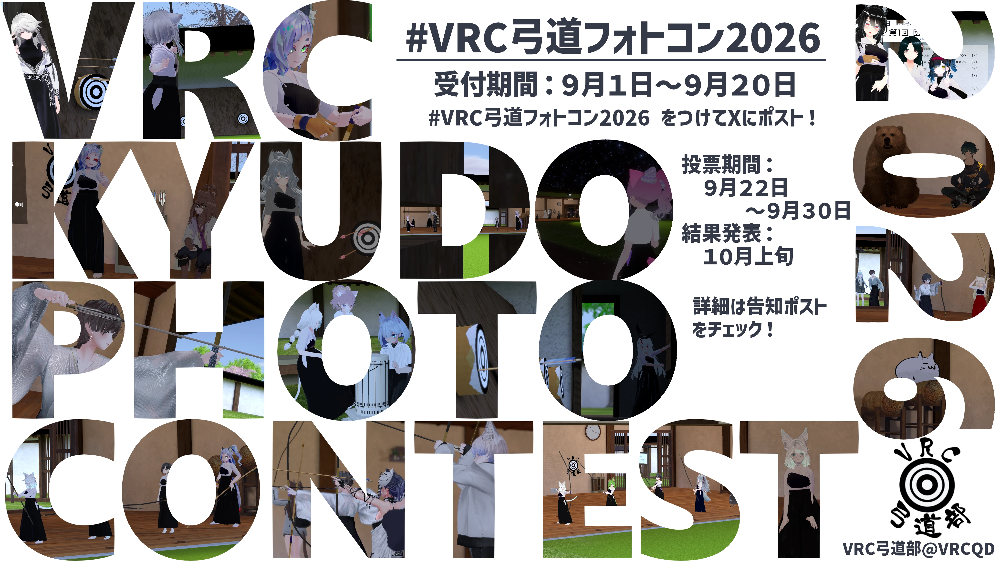

開催当初の告知画像です。作品の応募・投票は終了しました。
2026年10月7日 結果発表
受賞作品を公開しました
作品をお寄せくださった皆さま、投票にご参加くださった皆さま、ありがとうございました。
最優秀作品賞・最多得票賞の同時受賞作品と、優秀作品賞7作品をご紹介します。
作品を投稿された方は、マイページでご自身の作品の得票状況と投票コメントをご覧いただけます。登録したXアカウント名とパスワードでログインしてご確認ください。
開催概要・投稿規定を見る
投稿規定
- VRChat内で撮影されたものであり、人物、所作、道具、場面、ワールドなど広義において弓道に関係する写真であること。
- 縦横比の制限はありません。(投票フォームに掲載の際は16:9横長を基準とし適宜縮小表示されます）
- 画像加工は、撮影実態を大きく損なわない範囲で可能です。
- OKな加工の例: 色調調整、トリミング、多重撮影、透過撮影による人物の合成など。
- NGな加工の例: 画像加工によるイラストや文字入れ、コラージュ作品、被写体のAI生成など。
- NSFW非推奨（主催者判断により投票対象から除外することがあります）
投稿画像の取り扱い
投稿者は、主催者による画像の使用（投票フォームへの転載、弓道に関係する宣伝への利用、関連ワールドへの掲載など）に同意するものとします。主催者は画像使用の際にはクレジット表記を行い、スペースの都合上やむを得ない場合はそれに準じる措置をとるものとします。 応募作品の著作権は、応募後も応募者本人に帰属します。本企画への応募により、応募者が自身の作品をSNS、ポートフォリオ、他企画への応募、その他の用途で利用することを主催者が制限するものではありません。 #VRC弓道フォトコン2025 参加作品の再投稿は禁止。その他フォトコンテスト等との重複は許可します。(先方のイベントの規約も確認の上で投稿して下さい)
参考: VRChatの弓道場一覧
あおぞら弓道場 （Aozora Kyudo Hall） Created by ぷちりゅう
ほしぞら弓道場 （Hoshizora Kyudo Hall） Created by ぷちりゅう
VRC弓道場（VRC Kyudo Hall） Created by まってぃ
※これら以外のワールドで撮影された写真も投稿できます。撮影ワールドの制限はありません。
投票と集計方法
- 投票者は5作品を選び1位～5位まで順位を付けて投票します。それぞれの票に応じて[10/7/5/3/2pt]を加算します。
- 自分の投稿作品への投票はOKです。同一作品への重複投票は出来ません。
- 最優秀賞1点、最多得票賞1点、および優秀賞数点を選出し表彰します。表彰作品は弓道場ワールドに一定期間掲示予定です。
- 各種案内は VRC弓道部(@VRCQD) X公式アカウントより行います。
- 主催: VRC弓道部(@VRCQD) [部長: 伊予ハブ(@syuutingbe)、副部長: ぷちりゅう(@Puchiryuu_VRC)]